制作実績
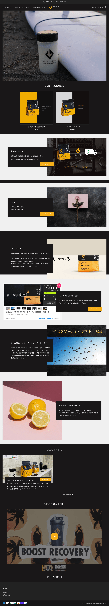

GOLDEN MISSION
Shopifyテーマを活用し、プロテイン販売に適したレイアウトに作成したECサイトです。
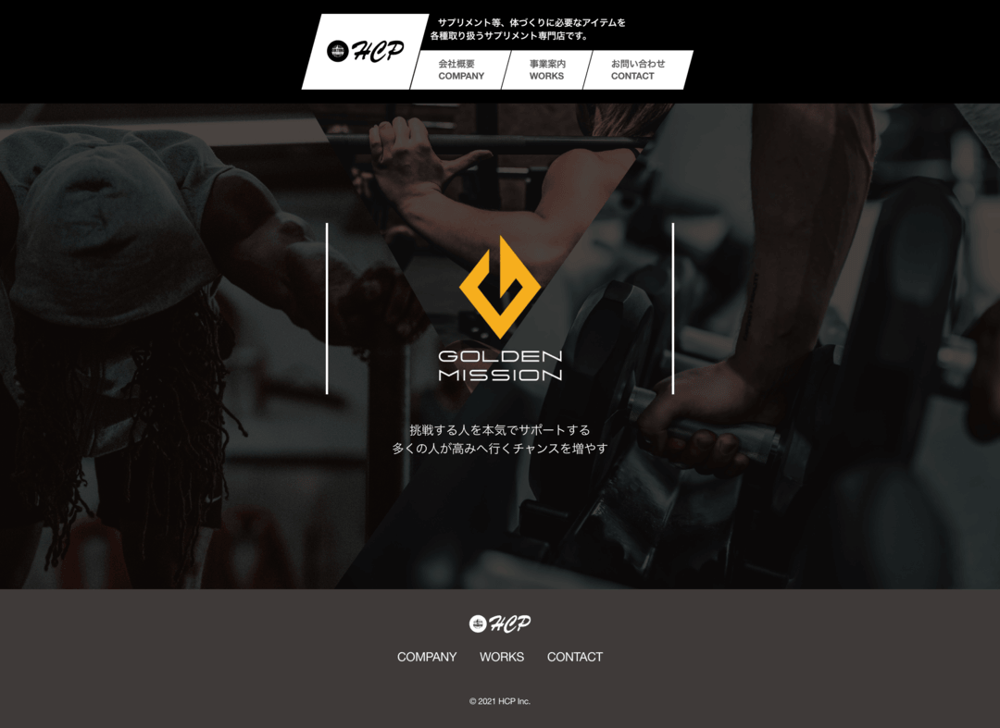
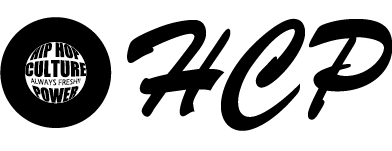
HCP
必要なものだけを残し、シンプルに設計したコーポレートサイト
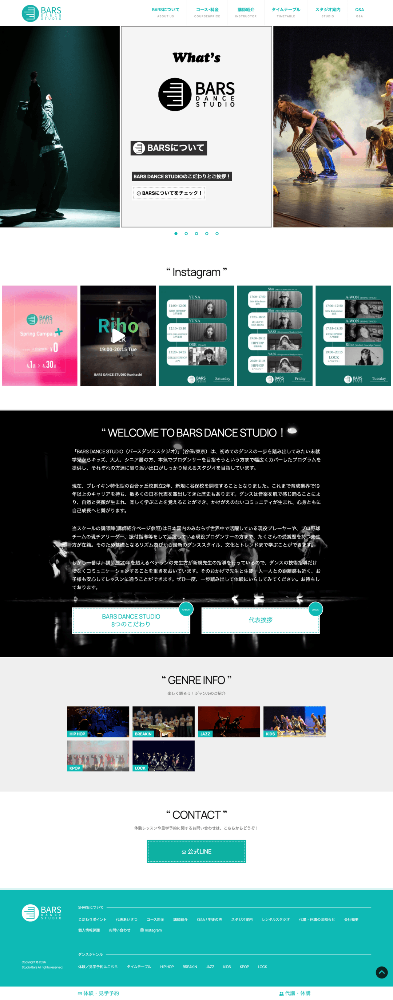
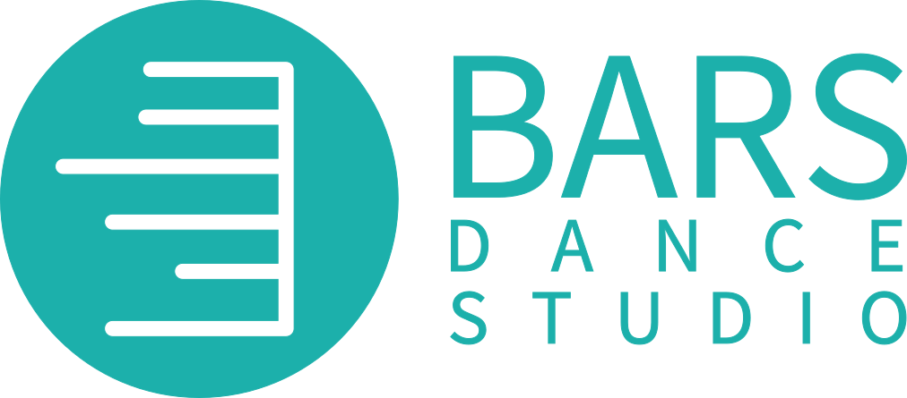
BARS DANCE STUDIO
お客様に必要な情報を見やすいようにまとめたダンススタジオのWEBサイト。
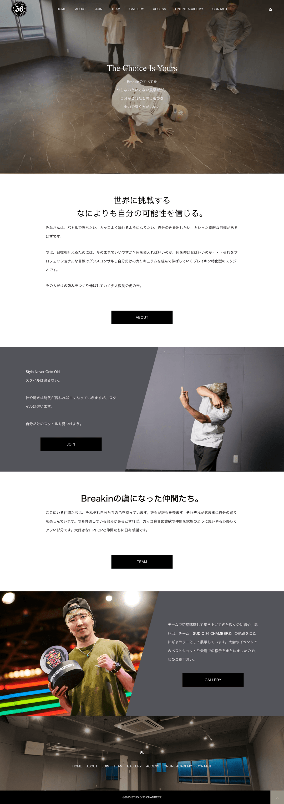
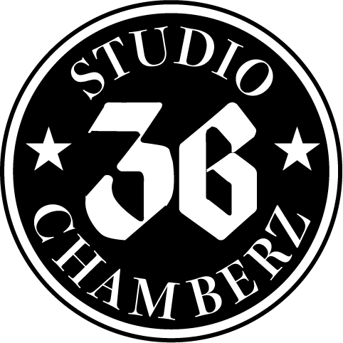
STUDIO 36 CHAMBERZ
WPテーマTCDを利用して作成したWEBサイト。
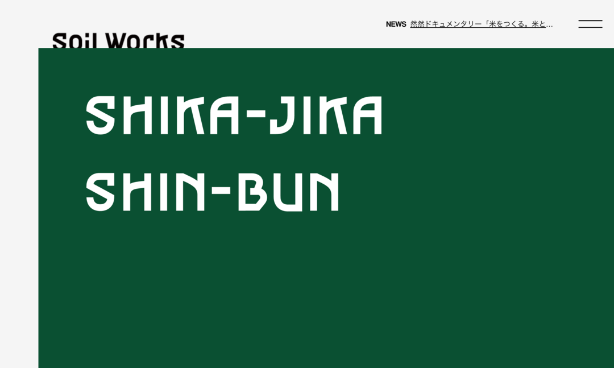
Soil Works
アニメーションを多用した新潟県南魚沼市の制作レーベルのコーポレートサイト
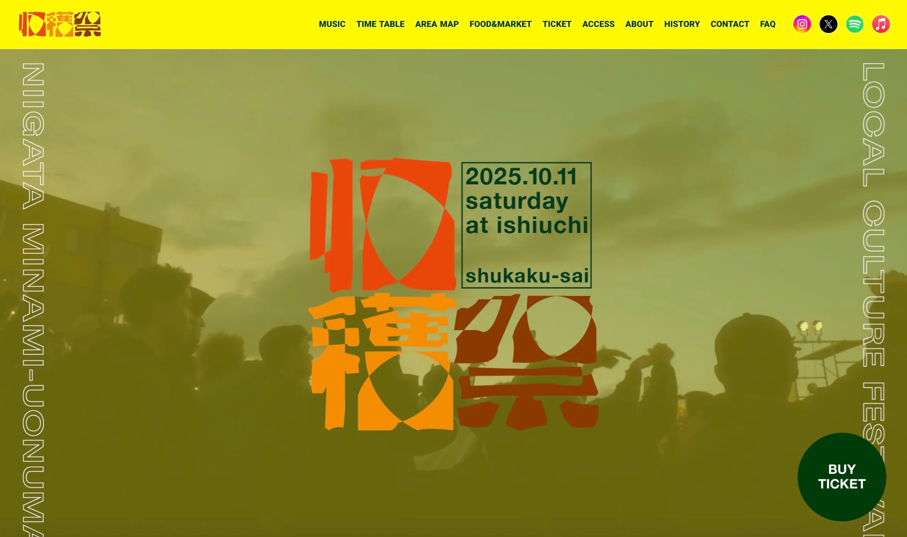
収穫祭
トップページアニメーションを担当
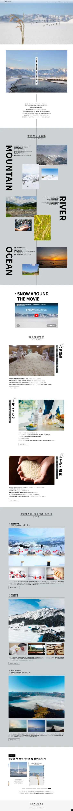
SNOW AROUND
雪国文化と地場産品をビジュアルで表現した地域プロモーションサイト
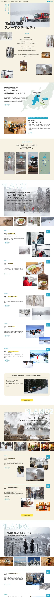
信越自然郷PRサイト
信越自然郷エリアの冬の楽しみ方を紹介したPRサイト。英語対応有り。

XII AFTER HOURS COLLECTIVE LAB
川崎拠点のダンス育成スクール。専門講師による少人数制指導で、中学生を対象にパフォーマンス技術を磨く。

BREAKING ACADEMY
ブレイキン専門のアカデミー。川崎拠点で専門講師から本格的な技術を学べる。
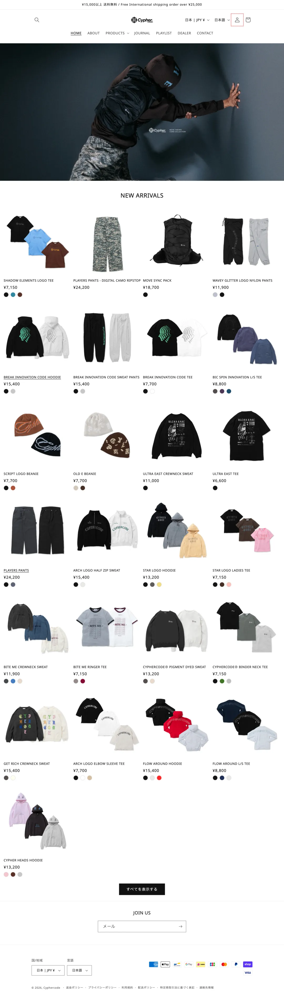

Cyphercode
ダンスカルチャー発のストリートアパレルブランド。パーカーやTシャツなど幅広いアイテムを展開するECサイト。